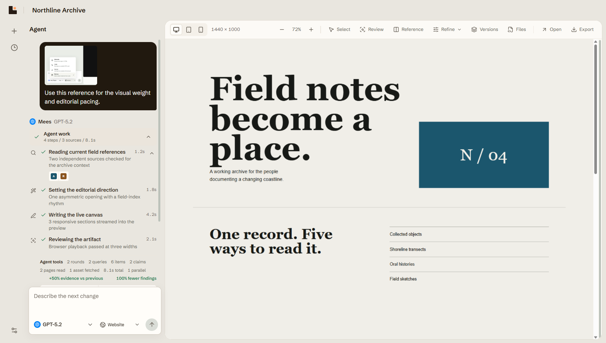
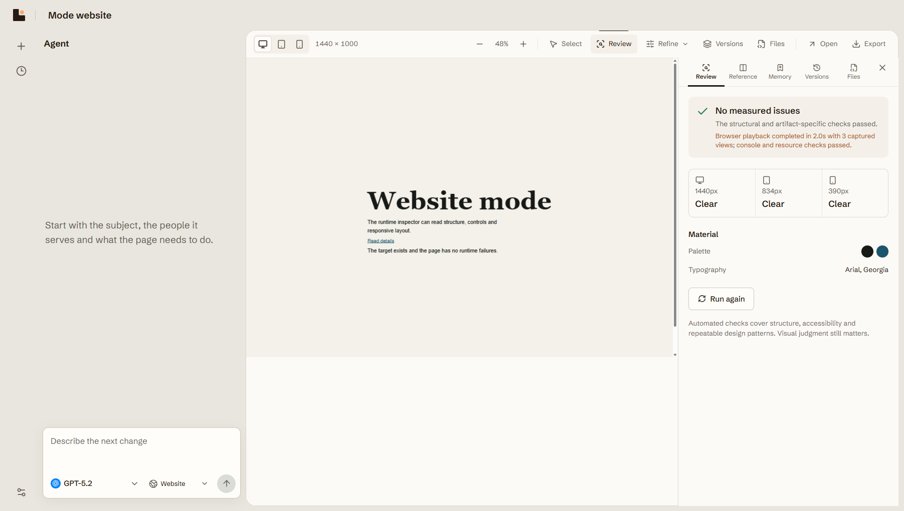
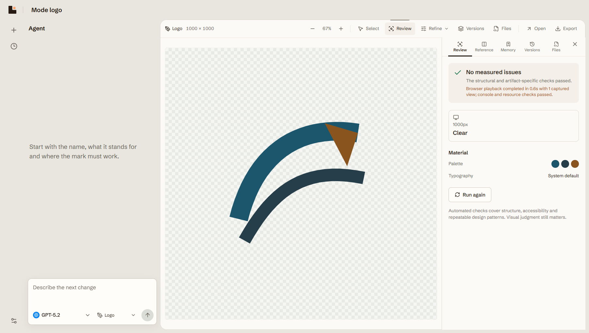
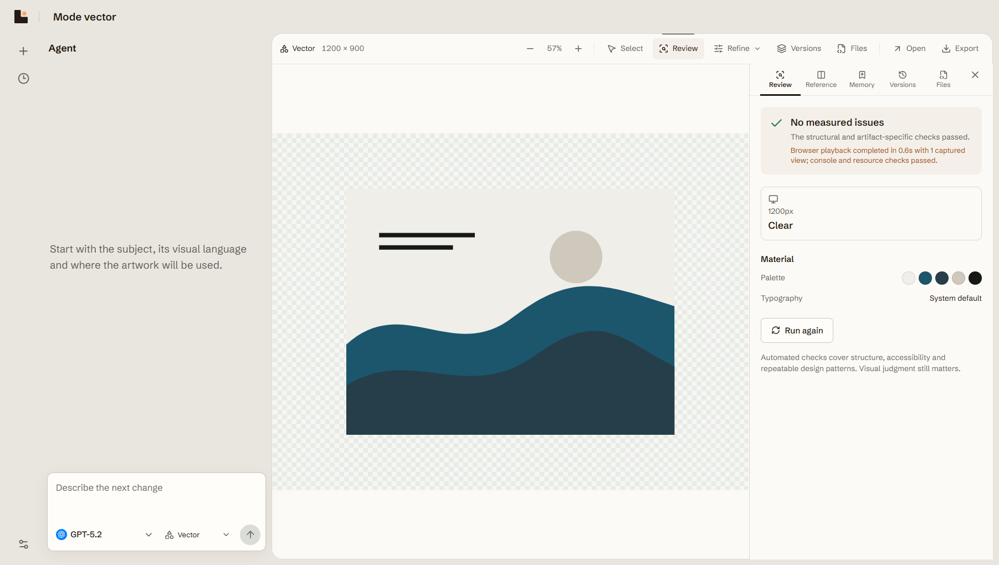
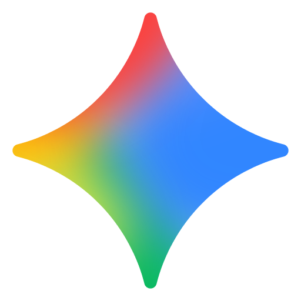
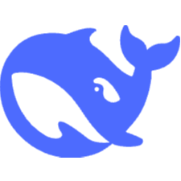

Make the artifact, not a mock.
A local-first design agent that researches, writes and reviews inside one live workspace. Use your own provider account and keep every project on your machine.

The work stays visible.
Search the web, read the strongest sources, write into the canvas and review the result in a real browser. The agent reports each step without turning the workspace into a progress dashboard.
-
Research
Current sources stay attached to the run and available for inspection.
-
Compose
Layout, type, color and content arrive as one deliberate design direction.
-
Build
The artifact streams directly into the live canvas while it is being written.
-
Review
Browser checks catch overflow, broken media, structure and accessibility issues.

One brief. Four kinds of craft.
Each output has its own structure, constraints and review pass. Website, identity, illustration and silent motion are built as real artifacts, not one generic template.




Your key. Your models.
Connect the paid account you already use. Mees loads the live text-model catalog from that provider and sends the request with the effort level the selected model supports.
Read how the provider layer works Claude
Your key
Claude
Your key

Gemini Your key
DeepSeek Your keyBring your work into one focused window.
Install Mees for Windows, connect a provider and start with your own API key. Projects, references and version history stay on your machine.